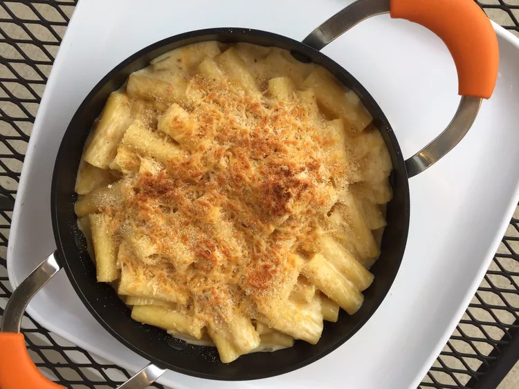

<h1>Mac N' Cheese</h1>

<h3>Cheese good, pasta good, taste good, nice</h3>

<h5>Ingredients needed for Mac N' Cheese</h5>
<ul>
    <li>egg</li>
    <li>beans</li>
    <li>1-2 unborn children (preference)</li>
</ul>

<ol><li>test</li>
    <li>test</li>
    <li>test</li>

</ol>


<a href="../index.html">Index</a>
<a href="./lasagna.html">Lasagna</a>